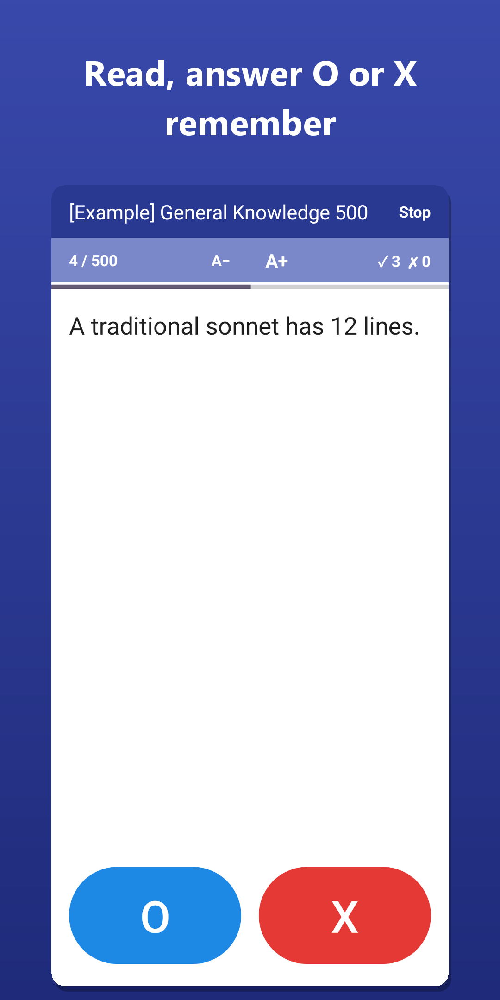
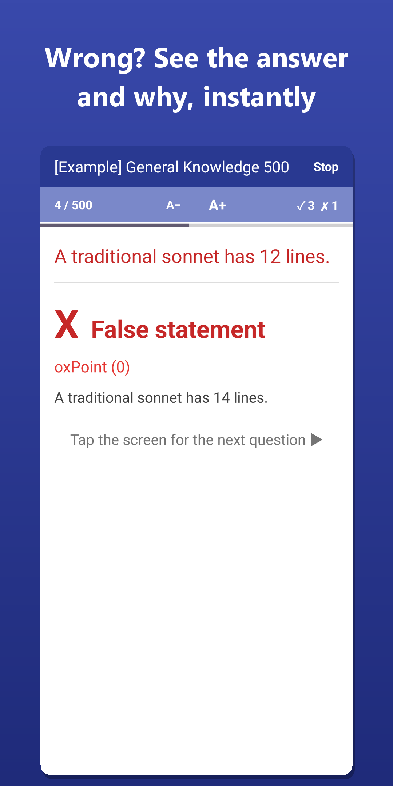
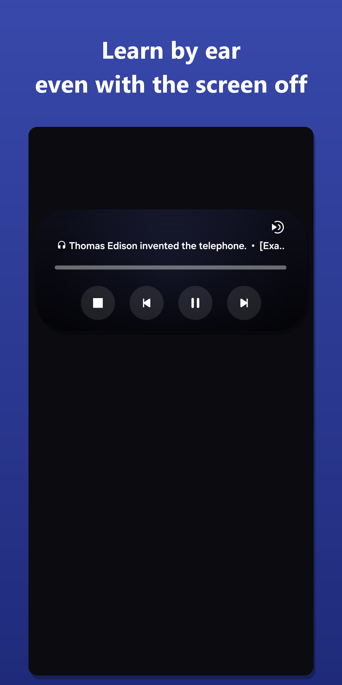
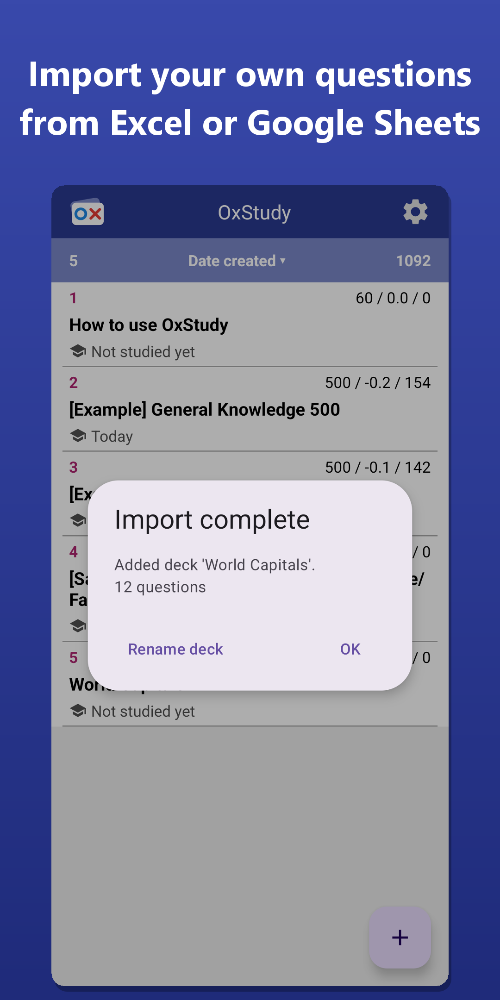

Med school lecture notes, exam statements, word meanings, general knowledge — anything you can check as true or false becomes a deck in OxStudy.
Great for
- Medical school basic sciences: physiology, pathology, pharmacology
- Certification and licensing exams
- The U.S. citizenship (naturalization) civics test (try 20 true/false practice questions)
- Learning Korean for EPS-TOPIK and TOPIK
- General knowledge (GK) and science quizzes, school vocabulary
- Listening while you commute or walk
Five modes
Test mode
Tap O or X within a time limit (5–40 seconds). Missed questions show the answer and explanation, and you can retry only the ones you got wrong.
List mode
Read questions with answers and explanations like a book. Drag the handle on the right to jump anywhere.
Card mode
Hands-free flashcards that move on by themselves, timed to the length of each card.
Audio mode
Reads the statement, answer and explanation aloud (1x–2x) and keeps reading with the screen off. Sleep timer included.
Edit mode
Add questions, fix typos, and search.
Weakest questions first: oxPoint
Every question keeps an oxPoint: +1 when you answer correctly in a test, −1 when you miss or run out of time. Pick only the questions you know least, such as “−2 or lower”, or only the questions you have not tried yet.
Make your own deck in Excel or Google Sheets
Put the statement in column A, the answer (O or X) in column B and an explanation in column C, then import the .xlsx file or Google Sheet. You can export a blank template from the app.
| A: Statement | B: Answer | C: Explanation |
|---|---|---|
| Water boils at 100 °C at sea level. | O | At 1 atm of pressure. |
| The Sun is a planet. | X | The Sun is a star. |
Example decks included
- Med school: Physiology 100, Pathology 100, Pharmacology 100 (every question explained)
- General Knowledge 300, Science 300
- U.S. Citizenship Civics Test (2025 version) – trial deck
- EPS-TOPIK Korean OX 100
Example decks are for practice, and their accuracy is not guaranteed.
Also
- Share decks as .oxstudy files, back up all decks with your study records
- Text size from 90% to 400%
- Languages: English, 한국어, 日本語, Tiếng Việt, Español, 繁體中文
- Phones and tablets
- Free with ads. No ads while you answer questions or while Card or Audio mode is playing. Your decks stay on your phone.